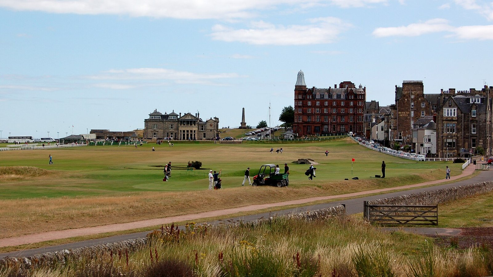

Sports · Golf
The 155th Open 2027
- Dates
- –
- Venue
- Old Course, St Andrews
- Location
- St Andrews, United Kingdom
- Format
- In-person
- Category
- Golf
- Industry
- Golf
- Organiser
- The R&A
- Official website
- https://www.theopen.com/
- Tickets
- https://www.theopen.com/tickets-and-hospitality/2027
About
Dates are the official R&A published championship window of 11-18 July 2027 at the Old Course, St Andrews (the 155th Open; St Andrews 31st Open). Championship rounds are 15-18 July.
Topics: major championship, golf, The Open.
No organiser attendance figure found on the official pages fetched 24 Nov 2026 for this upcoming edition. Ranked by our estimated size tier 'large' (30,000-100,000 attendees/visits), a judgement from format, venue and scale, not an official number.